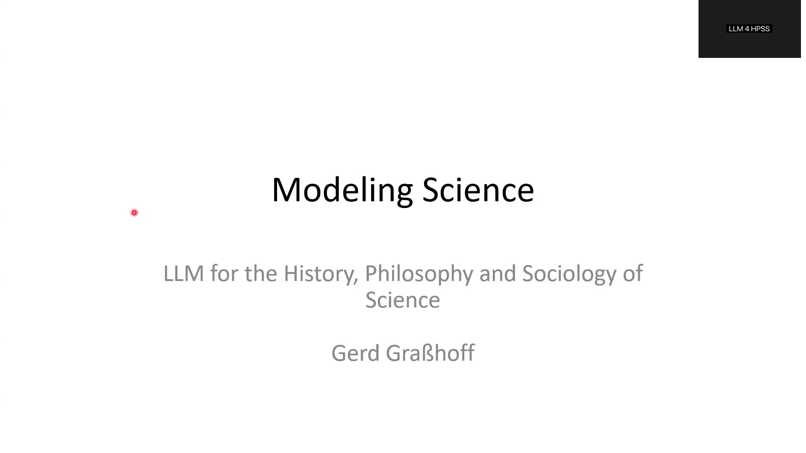
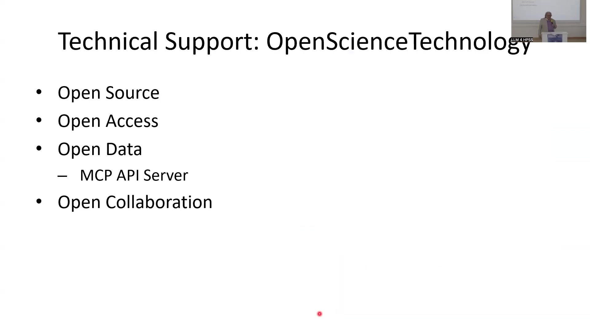

8 Modeling Science: LLM for the History, Philosophy and Sociology of Science
Overview
The application of Large Language Models (LLMs) to the History, Philosophy, and Sociology of Science (HPSS) presents intriguing possibilities. Nevertheless, current LLM technologies exhibit significant limitations that curtail their utility for rigorous scholarly inquiry. These models frequently require an adversarial mechanism to counteract hallucinations, and a fundamental misunderstanding persists: embedding vectors do not equate to the meanings of expressions. For LLMs to serve as genuine tools for knowledge discovery, they must transcend the mere formulation of plausible yet false statements and avoid the uncritical repetition of information disseminated across internet media. Instead, the pursuit of well-justified conclusions and the capacity to formulate plans for scientific investigation remain critical, yet largely unaddressed, challenges. Presently, no existing model adequately performs these tasks, nor does current technological development offer immediate prospects for achieving these essential goals.

8.1 Addressing Current LLM Deficiencies
A critical examination reveals several areas where contemporary LLMs fall short of the requirements for robust academic use in HPSS. Fundamentally, an opponent mechanism is needed to actively counter the generation of erroneous or misleading information, commonly termed hallucinations. Furthermore, it is crucial to recognise that embedding vectors, whilst useful for certain computational tasks, do not inherently capture the semantic meaning of expressions.

LLMs intended for scholarly applications should not merely generate text that sounds convincing but may be factually incorrect. Their function must extend beyond echoing content readily available on the internet, which often lacks rigorous verification. Instead, these systems ought to prioritise the generation of information that is best justified by available evidence. Moreover, the ability to develop and propose coherent plans for scientific inquiry represents a sophisticated cognitive function that current LLMs do not possess, even in nascent forms. Addressing these deficiencies is paramount for the responsible and effective integration of LLMs into scientific and historical research.
8.2 The Centrality of Validation and Computational Epistemology
To bridge these identified gaps, the concept of validation emerges as an indispensable component. Validation, in this context, encompasses the processes that provide reasons, arguments, and evidence both for and against the truth of a given proposition. It also extends to furnishing justifications for or against the pursuit of particular actions or lines of inquiry.

Addressing the methodological challenges of validation necessitates a new disciplinary approach, here termed Computational Epistemology. This proposed field would systematically develop methods and methodologies to instil validation capabilities within computational systems. Central to this endeavour is the cultivation of epistemic agency. This involves enabling systems to identify propositions that extend beyond mere sentential forms, to discern and analyse argumentation within texts and historical sources, and to recognise the intentions, plans, and actions of historical persons as documented or inferred from their extant traces.
8.3 AI-Assisted Historical Inquiry in Practice
A practical implementation of these principles can be observed in a specialised working environment designed for AI-assisted historical investigation. Consider, for instance, a historical inquiry into the construction of the Sanssouci palace, a project involving the distinguished 18th-century mathematician Leonhard Euler. A persistent question in the history of science concerns the extent of Euler’s involvement and whether any failures in the construction were attributable to him or to others; this episode remains one of the significant construction failures of its era, prompting longstanding debates amongst historians.

Within this digital workbench, researchers can pose specific queries, such as, “Reconstruct which persons carried out which work on the water fountain.” The objective is to obtain a validated, qualified answer that relies on verifiable evidence, rather than conjecture. The system, employing an AI agent (in this instance, named ‘Bernoulli’), can then analyse historical sources to produce a detailed list of individuals, their specific contributions, timelines, remuneration, and outcomes. This interface typically includes an inquiry window and tools for interacting with the AI agent. However, a primary difficulty arises: effective inquiry demands more than processing a single PDF document. It requires the capacity to search across all available sources, a task that simple indexing and token-based concentration cannot adequately address.
8.4 Essential Foundations for Scholarly AI Systems
Developing such sophisticated AI-assisted inquiry systems necessitates several core components. Firstly, a scholarly curated editorial board, which has meticulously worked on the primary sources, provides an indispensable foundation. An exemplar of such foundational work is the Opera Omnia of Euler, comprising 86 volumes compiled over approximately 120 years by numerous scholars, a project that concluded only recently with the editing of all his publications and correspondence. This corpus is further complemented by the work of other scholars.
This curated collection of content items effectively serves as a substitute for reliance on opaque embeddings. It forms a detailed database encompassing chronologies of actions, communicated expressions (such as letters or publications), the evolution of terminology and language used by historical figures, and records of tools and materials employed. Each item within this inventory is validated by source material, offering a rich, historically grounded record of activities.
8.5 Leveraging the Scholarium with Advanced Multimodal Models
Once these meticulously documented records are established within a framework—perhaps termed a ‘Scholarium’—they can be interrogated using advanced, accessible multimodal AI models. Current findings suggest that multimodal models, such as the latest iterations of Google’s Gemini, are particularly well-suited to meet the complex requirements of these tasks. These models possess the capability to synthesise information from diverse sources, including both textual and visual data, thereby enriching the analytical process.

The Scholarium would draw upon significant scholarly undertakings, such as the Opera Bernoulli Euler, Kepler’s Gesammelte Werke, and Brahe’s Opera Omnia. These comprehensive editions represent decades, even centuries, of dedicated scholarship, providing the high-quality, verified data essential for meaningful AI-driven analysis in HPSS.
8.6 Implementing Registries and Standardised Protocols
To manage and utilise this curated scholarly information effectively, a shift from reliance on simple embeddings towards structured registries is necessary. These registries would catalogue various types of information, including:
- Personal actions: Communication acts such as letters, publications, and reports.
- Statements: Logical implications, arguments, inquiries, and the use of specific language, terminology, concepts, models, methods, tools, data, and evidence.

The accessibility and interoperability of these registries depend on robust Application Programming Interfaces (APIs). Initiatives like the Model Context Protocol (MCP), advanced by organisations such as Anthropic, offer pathways towards standardising how AI models interact with such rich datasets, ensuring that contextual information is preserved and appropriately utilised.
8.7 Ensuring Sustainability through FAIR Infrastructure and Open Collaboration
The long-term viability of such scholarly resources hinges upon a robust and Findable, Accessible, Interoperable, and Reusable (FAIR) data infrastructure. Platforms like Zenodo, hosted by CERN in Geneva, offer a reliable solution for storing and publishing these curated datasets, ensuring their availability for many years to come.
Technical support for maintaining and developing this infrastructure is also crucial. A startup, OpenScienceTechnology, provides services for running the necessary systems, including an MCP API server. This server facilitates worldwide access to the curated data, enabling artificial intelligence models to conduct inquiries via a standardised API.
This entire endeavour thrives on a spirit of open collaboration. The principles guiding this work include commitments to:
- Open Source software
- Open Access to publications and resources
- Open Data, supported by mechanisms like the MCP API Server
- Open Collaboration amongst researchers, institutions, and technical providers

Through these combined efforts—rigorous scholarship, advanced AI, robust infrastructure, and open practices—we can aspire to create powerful new tools for exploring the history, philosophy, and sociology of science.